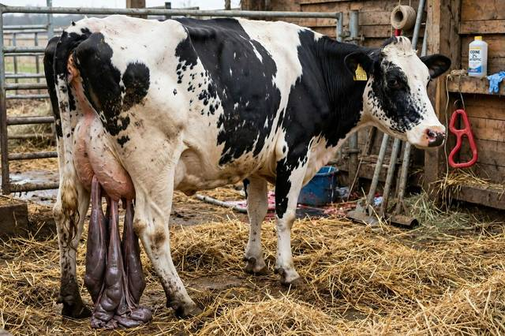
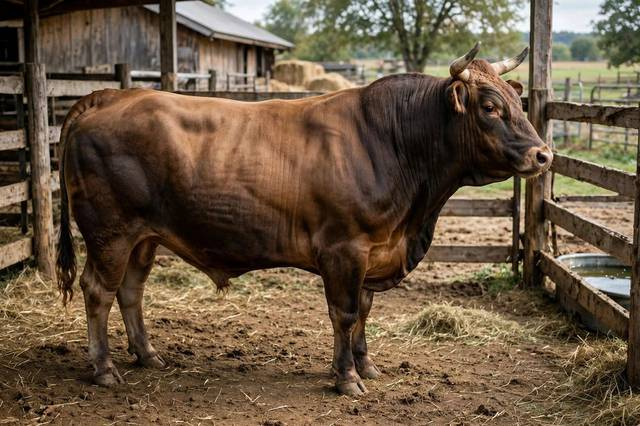

Brucellosis is a contagious bacterial disease of livestock and an important zoonosis. It can cause reproductive losses in cattle and buffalo and can infect people through unpasteurised dairy products or contact with infected birth materials.
This guide covers clinical signs, causes, diagnosis, treatment principles and prevention.
Clinical Signs
1
Late-Term Abortion(Abortion in late pregnancy)
2
Retained Placenta(Afterbirth not passed after calving)
3
Weak Newborns(Weak calves born alive)
4
Reduced Fertility(Difficulty conceiving)
5
Orchitis or Epididymitis(Swollen, painful testicles in males)
Late-Term Abortion

Retained PlacentaWeak NewbornsReduced Fertility

Orchitis or Epididymitis
Causes and Transmission
Brucella bacteria spread through aborted foetuses, placenta, uterine discharge, milk and contaminated environments. People may be exposed while assisting births or handling unpasteurised milk.
Veterinary Diagnosis
Diagnosis requires approved laboratory tests, often serology and confirmatory testing according to the national control programme. Clinical signs alone cannot confirm brucellosis.
Treatment and Case Management
There is generally no recommended routine curative treatment for infected food-producing herds. Follow official testing, reporting, movement-control and removal policies. Do not attempt unsupervised antibiotic treatment.
When to seek urgent help: Brucellosis is a zoonotic and often reportable disease. Protect people handling abortions and contact the local veterinary authority.
No specific medicine: There is no routine curative treatment for brucellosis in food-producing herds. Follow official testing, reporting, movement-control and removal policies, and contact the local veterinary authority. Do not attempt unsupervised antibiotic treatment.
⚠ Important Tips:
Report suspected cases to the veterinary authority.
Do not attempt unsupervised antibiotic treatment.
Wear gloves when handling abortions — brucellosis can infect people.
Do not sell or move suspect animals without veterinary advice.
Vaccination — follow the vet’s scheduleMedicines — only as prescribed by a veterinarian
Prevention and Herd Management
Use tested replacement stock, follow official vaccination and surveillance programmes, isolate abortion cases, safely dispose of foetuses and placentas, disinfect contaminated areas, wear protective gloves and consume only pasteurised milk.
Frequently Asked Questions
What are the symptoms of brucellosis in cattle?
Late-term abortion, retained placenta, weak newborns and reduced fertility. In some males, orchitis or epididymitis may occur. Many infected animals show few obvious signs.
How does brucellosis spread in cattle?
Brucella bacteria spread through aborted foetuses, placenta, uterine discharge, milk and contaminated environments.
Can brucellosis spread from cattle to people?
Yes, brucellosis is an important zoonosis. People can be infected through unpasteurised dairy products or contact with infected birth materials. Wear protective gloves when handling abortions and consume only pasteurised milk.
How is brucellosis in cattle diagnosed?
Diagnosis requires approved laboratory tests, often serology with confirmatory testing according to the national control programme. Clinical signs alone cannot confirm brucellosis.
How is brucellosis in cattle controlled?
There is generally no recommended routine curative treatment for infected food-producing herds. Follow official testing, reporting, movement-control and removal policies, and contact the local veterinary authority. Do not attempt unsupervised antibiotic treatment.
Why does my cow abort?
Brucellosis is a common cause of late-term abortion in cattle, along with retained placenta and weak newborns. Because it also spreads to people, wear protective gloves, dispose of abortion material safely and contact the local veterinary authority.
Is brucellosis in cattle curable?
There is generally no recommended routine curative treatment for infected food-producing herds. Control follows official testing, reporting, movement-control and removal policies, so do not attempt unsupervised antibiotic treatment.
گائے کا اسقاط حمل (بچہ گرنا) کیوں ہوتا ہے؟
بروسیلوسس گائے میں دیر سے اسقاط حمل، جیر رک جانا اور کمزور بچے کی عام وجہ ہے۔ یہ بیماری انسانوں کو بھی لگ سکتی ہے، اس لیے اسقاط کے وقت دستانے پہنیں اور صرف پاستورائزڈ دودھ استعمال کریں۔ متاثرہ جانور کی اطلاع ویٹرنری حکام کو دیں۔
Key Takeaway
Early recognition, accurate diagnosis, responsible veterinary care and herd-level prevention are central to managing this condition. Follow current local veterinary authority guidance and medicine labels.